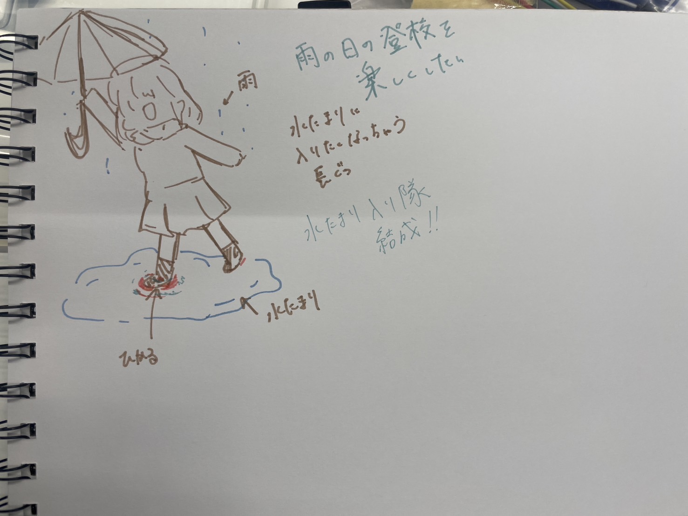

水たまり入り隊メンバー
アイデアスケッチ

概要
【雨の日でも楽しく!水溜まりに入っちゃってもテンションup⤴⤴⤴】
水溜まりに入るとセンサーが反応し、レインブーツに設置したLEDライトが光る仕組みを作ります。
活動記録
[2024.05.28.Mon] 班結成・プロジェクト決め・アイデアスケッチ作成
[2024.06.03.Mon] 購入品確認→一部注文・アンケート作成→実施
アンケートフォーム
プロセスメモ
◎任務、疑問 ◇具体的にやること ▶任務遂行
◇水溜まりに入ったら光る仕組み
◇水センサーで感知→LEDライトを光らせる
▶水センサー・LEDライト・延長用ケーブルを購入
◇外観
◎LEDライトはレインブーツに巻き付ける？どこに？
◎Ardinoの基盤はどこに設置する？
◇レインブーツの底をぬいて埋め込む
◇基盤が入るようにでレインブーツ底上げのためのパーツを作る＠ファブラボ
◎素材未定
使用したもの
購入品
紹介動画